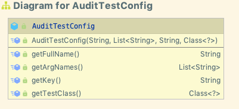

Audit Tool 0.9 Operation
Installation and Configuration
Please refer to Installation for details of installation.
Please see the section
Operation
On Windows machines, the script type .sh is replaced with PowerShell scripts, which have the suffix .ps1
Starting
Start the audit tool with the audittool.sh script. The configuration step above should have initialized locations of the software which audittool.sh needs.
The arguments to audit tool are simply:
usage: AuditTest [options] { - | Directory,Directory,Directory}
where:
- read folders from standard input (not supported on PowerShell)
Directory .... is a list of directories separated by whitespace.
[options] are:
-d,--debug Show debugging information
-i,--inputFile <arg> Input file, one path per line
-l,--log_home <arg> Test Result log directory. Must be writable.
Default is <UserHome>/audit-test-logs/. Created if
not exists. Other logs are still written to default log home
The -d switch has no functionality as of release 0.9
Exit status
Release V09. Rel 4 (6 Nov 2020) adds 'WARNING' semantics to test outcomes. Several tests require the existence of well-known directory names which contain image groups. You can set these names in the shell.properties files on a site-by-site basis.
With this release, if those directories aren't found, the test will hold the "Not run" outcome, and the logs will log the tests results as a WARN, instead of an Error.
The overall result of a batch of tests has new semantics as well. Formerly, a test run passed only if all tests passed. A WARNING result would have been determined to be the same as an ERROR. In this release, the overall run result is calculated:
- PASS only if every test passed
- WARN if some tests passed and some tests had WARN status
- FAIL if any test failed.
This result is captured in the output file name of the run result: {PASS|WARN|FAIL}-WorkRID={date}.csv
However, the return code of the audittool program is still - 0 if no tests failed (some may have passed, some may have warned) - 1 if any test failed
Using input files
The Java runtime in audit tool expects to find its input files (the -i flag, and the - flag) and arguments in the UTF-8 encoding. This is native on
most of audit tool's supported platforms. Using redirection (the > or | operators)on Microsoft Windows Powershell
may not create files with the correct encoding. Powershell's pipe operator doesn't behave like
Linux, so piping a output of a file to audit tool may not behave as expected.
Correcting the encoding is outside of the scope of this document. For best results, do all pipe and file manipulation
inside the cmd environment, or upgrade to PowerShell 6.
Outputs
Run logs and work logs
Audit tool creates two sets of logs:
- Run logs, which capture one invocation of Audit tool. These are in \<User home>/audit-tool-logs/. Two sets,
csv, and log files are generated. \<User home> is the interactive user's home directory.
- Per Work logs. One .CSV file is created for each work audittool scans. A "work" in this context means a top level directory.
It is not connected to any existing BDRC library. These are located in either the Run log home (above) or in the directory
specified in the -l | --log_home argument.
Note to windows users: You can change the default log home in the log4j2.properties file in the installer.
That file contains a proposed Windows location.
Per work logs
File name
Each work which is analyzed has its output written to a file WorkName.YYYY-MM-DD-HH-MM.csv in the work log location (se above.) YYYY-MM-DD-HH-MM of course, stands for the run date and time.
Optionally, the user can indicate the pass or fail status of each work's test by setting properties
in the installation's log4j2.propertes file. This shows the properties:
property.passPrefix=PASS-
property.failPrefix=FAIL-
property.warnPrefix=WARN-
Any unicode text is allowed, but please bear in mind that support staff might not have the fonts installed on their machines.
Work log contents
The work log file contains the results for each test in sequence. Tests which are ordinarily found in the detail logs are added after the overall test result.
The work run log contains a blend of the summary and the detail loggers below, in csv format. A sample work log is:
| id | test_name | outcome | error_number | error_test | detail_path |
|---|---|---|---|---|---|
| W1KG13765 | No Files in Root Folder | Passed | /Users/dev/tmp/pub/00/W1KG13765 | ||
| W1KG13765 | Web Image Attributes | Failed | /Users/dev/tmp/pub/00/W1KG13765 | ||
| 110 | Image file /Users/dev/tmp/pub/00/W1KG13765/images/W1KG13765-I1KG14951/I1KG149510049.tif has no suitable reader. | /Users/dev/tmp/pub/00/W1KG13765 | |||
| 110 | Image file /Users/dev/tmp/pub/00/W1KG13765/images/W1KG13765-I1KG14951/I1KG149510061.tif has no suitable reader. | /Users/dev/tmp/pub/00/W1KG13765 | |||
| 110 | Image file /Users/dev/tmp/pub/00/W1KG13765/images/W1KG13765-I1KG14951/I1KG149510075.tif has no suitable reader. | /Users/dev/tmp/pub/00/W1KG13765 | |||
| 110 | Image file /Users/dev/tmp/pub/00/W1KG13765/images/W1KG13765-I1KG14951/I1KG149510101.tif has no suitable reader. | /Users/dev/tmp/pub/00/W1KG13765 | |||
| W1KG13765 | No folders allowed in Image Group folders | Passed | /Users/dev/tmp/pub/00/W1KG13765 | ||
| W1KG13765 | File Sequence Test | Failed | /Users/dev/tmp/pub/00/W1KG13765 | ||
| 106 | Folder /Users/dev/tmp/pub/00/W1KG13765/images/W1KG13765-I1KG14951 fails sequence test. | /Users/dev/tmp/pub/00/W1KG13765 | |||
| 105 | Sequence File dimensions does not end in an integer: ends with not found | /Users/dev/tmp/pub/00/W1KG13765 |
Run logs
Audit Tool log outputs are in subdirectories of audit-tool-logs of the user's home directory. You can change the base
folder in two ways:
- edit in the Audit tool's log4j2.properties entry property.logRoot entry.
- use the -l | --log_home argument in the call to audittool.sh
You can configure other logging properties in the log4j2.properties file. NOTE: log4j2 is significantly different from the original log4j.
Under audit-tool-logs are folders containing csv and log
Log Contents
Log
| Level | File name | Details |
|---|---|---|
| Summary | AuditTestShell-SUMMARY-date&Time.log |
Audit Tool writes a summary of each test to the console, and to a summary log file. The summary log file shows the pass/fail status of each test on each given directory. |
| Detail | AuditTestShell-DETAIL-date&Time.log |
A detailed log file, shows each file which failed a specific test. |
| Internal | AuditTestShell-TestInt-date&time.log |
the shell passes in this log4j logger for test internal logging. |
The detail files contain the summary result. If there were failures, each item which failed is separately listed (see below)
CSV
CSV files are output for easier analysis and collection. They follow the log files' naming conventions.
Summary and detail log files have different data formats. The summary file contains:
| outcome | path | test_name |
|---|---|---|
| Passed | \\TBRCRS3\Archive\W1KG10190 | No Files in Root Folder |
The detail file contains:
| error_number | error_test | path |
|---|---|---|
| 104 | Image group folder \\TBRCRS3\Archive\W1KG10190\archive\W1KG10190-I1KG10192 fails files only test. | \\TBRCRS3\Archive\W1KG10190 |
| 103 | Image group folder \\TBRCRS3\Archive\W1KG10190\archive\W1KG10190-I1KG10192 contains directory S0001491.JOB-A | \\TBRCRS3\Archive\W1KG10190 |
Note that the path which failed the test is given as a separate data element: there is no obligation that the error message contain the path, and separating the path allows for easier data access.
Principles of operation
Audit tool's initial release runs every test in the test library tests against a complete work. There is no provision yet for running a test against a single image group or subdirectory of a work.
Property file
shell.properties
Audit tool reads several variables from its property file shell.properties which is found in the same subdirectory as the shell jar file. These properties locate the tests and define parameters which the tests need, such as the
folder names of parents of image groups.
log4j2.properties
Values relating to logging and output appear here. You can configure the parent folder of log files, their formats and file names.
Overriding properties
- As a user, you can override
shell.propertiesproperties by creating a file$HOME/.config/bdrc/auditTool/user.properties - As a system administrator, you can override any property (even user properties) by defining them in the VM options
section of the
audittool.sh(audittool.ps1on Windows command line).
In this example, we're overriding the MaximumImageFileSize property to a value slightly smaller than the default.
java -DMaximumImageFileSize=300K -DatHome=${CONFIG_ATHOME} -Dlog4j.configurationFile=${LOG_PROPS} -jar ${shellJar} $@
Note the evaluation is one-pass. You cannot override the default user.properties file on the command line. This will not cause the values of 'other_config.properties' to be read in. Command line properties are always read last.
java -DUserConfigPath=wont.be.read.properties -DatHome=${CONFIG_ATHOME} -Dlog4j.configurationFile=${LOG_PROPS} -jar ${shellJar} $@
Detailed examples are given in Appendix I.
Test Requirements
The test requirements and functions are outside of the scope of this document. A draft requirements document of the tests can be found at Audit Tool Test Requirements
Operation
The Audit Tool shell jar (which audittool.sh passes as the main jar file to java) can either run an internal set of tests,
or can use an external jar file. It runs all the tests in the library against all the directories given in the arguments.
Please refer to Using an external library for instructions on how to use an external test library.
Test output
The tests themselves do not output results. The test framework allows the shell to iterate over the results and act on them. Initially, these are sent to log files, but we could send them to a database without changing any code, by reconfiguring the logging to send to a database.
You can toggle on and off logging by changing comment status as described in the log4j2.properties file.
Test Internal logging
To trace tests' internal logs, each test gets passed in an internal logger whose name
is its class name. The logger which handles these are in the log4j2.properties file in the section logger.testLogger.name=io.bdrc.am.audit.audittests
To reduce output, this logger's appender is set to null, as shown here:
# --------------------- Test Internals logging ---------------
appender.testInternals.name=testInternalsName
#
# To activate internal test logging, uncomment this line, and comment out
# the remaining testInternals lines
appender.testInternals.type=Null
# To activate internal test logging, comment the previous line, and uncomment the next stanza
# appender.testInternals.type=File
# appender.testInternals.append=false
# appender.testInternals.fileName=${logPrefix}-${TestInt}-${date:yyyy-MM-dd-HH-mm-ss}.log
# appender.testInternals.layoutString.type = PatternLayout
# appender.testInternals.layoutString.pattern=%d{yyyy-MM-dd HH.mm.ss} %-5p %m :%C:%n
#
# --------------------- end Test Internals logging ----------------
Using an external test library
Audit tool contains an internal library which contains various tests. To run a different library, you need to define two
JVM options with the -D flag:
- testJar: Path to the Jar file which contains the tests
- testDictionaryClassName: the fully qualified variable name of a public class in the testJar which implements
io.bdrc.audit.ITestDictionary
Example:
java -DtestJar=/usr/local/bin/at09/audit-test-lib-someversion.jar -DtestDictionaryClassName=io.bdrc.am.at.audittests.TestDictionary -DatHome=${CONFIG_ATHOME} io.bdrc.am.audit.shell.shell /Volumes/Archive/W2KG20927
Test Developer's Guide
This section describes how to implement and package different test libraries. The general Audit Tool User doesn't need this material.
Locating the tests
Test Dictionary
The shell assumes that the package io.bdrc.am.audit.iaudit is either:
- in the shell jar file itself
- on the class path
- or specified with the -DtestJar .... -DtestDictionaryClassName (see 'Using an external test library' above)
Test Config objects
The test dictionary has a dependency on AuditTestConfig class. Test developers include this library in their Jar, and provide Test configuration objects. The test configuration objects provide information to the shell as to a test's name, friendly description, class which implements the test (which, again, can be in any package in the library) .

AuditTestConfig constructor
/**
* Instantiates a new Audit test config.
*
* @param fullName the full name
* @param argNames the arg names
* @param shortName the short name
* @param clazz the clazz
*/
public AuditTestConfig(String fullName, List<String> argNames, String shortName, Class<?> clazz)
To package a test you implement one of these and add it to your TestDictionary.
audit-test-lib.TestDictionary() constructor shows AuditTestConfig usaqe:
private final Hashtable<String, AuditTestConfig> _TestDictionary = new Hashtable<String, AuditTestConfig>() {
{
put("FileSequence", new AuditTestConfig("File Sequence Test",
// This statement asserts that the caller has to provide values for these
// arguments
Arrays.asList(
"ArchiveImageGroupParent", "DerivedImageGroupParent"),
"FileSequence", FileSequence.class));
//noinspection ArraysAsListWithZeroOrOneArgument
put("NoFilesInFolder", new AuditTestConfig("No Files in Root Folder",
Arrays.asList(""),
"NoFilesInFolder",
NoFilesInRoot.class));
put("NoFoldersInImageGroups", new AuditTestConfig("No folders allowed in Image Group folders",
Arrays.asList("ArchiveImageGroupParent", "DerivedImageGroupParent"),"NoFoldersInImageGroups",
NoFoldersInImageGroups.class));
}
};
Parameters
The constructor takes these parameters
| name | type | description |
|---|---|---|
| fullName | String |
Free form text |
| argNames | List<String> |
List of argument names. The caller of the test provides a List of Strings which are K=V pairs. This is a poor man's implementation of Python's **kwargs |
| shortName | String |
Short mnemonic, for use in scripting. Should not contain spaces. Usually, this is the TestDictionary. key for which this object is the value |
| clazz | Class<?> |
Any class object which implements the IAuditTest interface. |
Running a test
A full production instance is available in audit-test-shell/src/main/java/io/bdrc/am/audit/shell/shell.java
Once you've acquired its AuditTestConfig object, the components of running a test are:
- Instantiating its with its constructor
- setting its path and keyword arguments (IAudit.setParams())
- calling it's LaunchTest implementation.
This code fragment of audit-test-shell shows this operation
Constructor<IAuditTest> ctor = testClass.getConstructor(Logger.class);
IAuditTest inst = ctor.newInstance(testLogger);
inst.setParams((Object[]) params);
inst.LaunchTest();
tr = inst.getTestResult();
(you can implement your test classes without a Constructor requiring a logger. In this case, the test writer and the shell writer conspired together to require a logger in the constructor.)
Examining test results.
audit-test-interface/io/bdrc/am/audit/iaudit/TestResult and TestMessage define the objects which implement test results.
The TestResult.Passed() method contains the overall outcome of the test.
Test messages are retrieved by the TestResults.getErrors() method. It's a good idea to have the first error in the list name the container which failed the test, followed by all the specific failure instances for each file. The caller determines the logging disposition.
Appendix I
Property overriding example
In this example, we test a work overriding the MaximumImageFileSize property. This example shows
runs that use:
- the default property
- a much smaller value, defined in user.properties
- an override of that smaller value defined in the shell script.
Ex 1. No user.properties file, shell.properties value of 400K used. Tests pass
❯ ls -l ~/.config/bdrc/auditTool/user.properties
gls: cannot access '/Users/XXX/.config/bdrc/auditTool/user.properties': No such file or directory
❯ audittool.sh -l . ../../Archive/W8LS68226
starting -l . ../../Archive/W8LS68226
INFO Passed /Users/jimk/dev/tmp/at/test/../../Archive/W8LS68226 Archive EXIF Test
INFO Passed /Users/jimk/dev/tmp/at/test/../../Archive/W8LS68226 No Files in Root Folder
INFO Passed /Users/jimk/dev/tmp/at/test/../../Archive/W8LS68226 Image EXIF Test
INFO Passed /Users/jimk/dev/tmp/at/test/../../Archive/W8LS68226 Web Image Attributes
INFO Passed /Users/jimk/dev/tmp/at/test/../../Archive/W8LS68226 No folders allowed in Image Group folders
INFO Passed /Users/jimk/dev/tmp/at/test/../../Archive/W8LS68226 File Sequence Test
INFO Passed /Users/jimk/dev/tmp/at/test/../../Archive/W8LS68226 File Size Test
Ex 2. Using User.properties Here, the default is set to 40K, and the Image file size test fails.
❯ grep MaximumImage ~/.config/bdrc/auditTool/user.properties
MaximumImageFileSize=40K
❯ audittool.sh -l . ../../Archive/W8LS68226
starting -l . ../../Archive/W8LS68226
INFO Passed /Users/jimk/dev/tmp/at/test/../../Archive/W8LS68226 Archive EXIF Test
INFO Passed /Users/jimk/dev/tmp/at/test/../../Archive/W8LS68226 No Files in Root Folder
INFO Passed /Users/jimk/dev/tmp/at/test/../../Archive/W8LS68226 Image EXIF Test
INFO Passed /Users/jimk/dev/tmp/at/test/../../Archive/W8LS68226 Web Image Attributes
INFO Passed /Users/jimk/dev/tmp/at/test/../../Archive/W8LS68226 No folders allowed in Image Group folders
INFO Passed /Users/jimk/dev/tmp/at/test/../../Archive/W8LS68226 File Sequence Test
ERROR Failed /Users/jimk/dev/tmp/at/test/../../Archive/W8LS68226 File Size Test
Errors! returned:1: check logs
Ex 3: Raising the user properties value
❯ grep MaximumImage ~/.config/bdrc/auditTool/user.properties
MaximumImageFileSize=300K
❯ audittool.sh -l . ../../Archive/W8LS68226
starting -l . ../../Archive/W8LS68226
INFO Passed /Users/jimk/dev/tmp/at/test/../../Archive/W8LS68226 Archive EXIF Test
INFO Passed /Users/jimk/dev/tmp/at/test/../../Archive/W8LS68226 No Files in Root Folder
INFO Passed /Users/jimk/dev/tmp/at/test/../../Archive/W8LS68226 Image EXIF Test
INFO Passed /Users/jimk/dev/tmp/at/test/../../Archive/W8LS68226 Web Image Attributes
INFO Passed /Users/jimk/dev/tmp/at/test/../../Archive/W8LS68226 No folders allowed in Image Group folders
INFO Passed /Users/jimk/dev/tmp/at/test/../../Archive/W8LS68226 File Sequence Test
INFO Passed /Users/jimk/dev/tmp/at/test/../../Archive/W8LS68226 File Size Test
Ex 4: Overriding user.properties with VM arguments
In this example, we've defined a much smaller argument in a copy of the command file, and the test fails.
❯ grep Maximum ./use_vm_args_to_override.sh
java -DMaximumImageFileSize=30K -DatHome=${CONFIG_ATHOME} -Dlog4j.configurationFile=${LOG_PROPS} -jar ${shellJar} $@
❯ ./use_vm_args_to_override.sh -l . ../../Archive/W8LS68226
starting -l . ../../Archive/W8LS68226
INFO Passed /Users/jimk/dev/tmp/at/test/../../Archive/W8LS68226 Archive EXIF Test
INFO Passed /Users/jimk/dev/tmp/at/test/../../Archive/W8LS68226 No Files in Root Folder
INFO Passed /Users/jimk/dev/tmp/at/test/../../Archive/W8LS68226 Image EXIF Test
INFO Passed /Users/jimk/dev/tmp/at/test/../../Archive/W8LS68226 Web Image Attributes
INFO Passed /Users/jimk/dev/tmp/at/test/../../Archive/W8LS68226 No folders allowed in Image Group folders
INFO Passed /Users/jimk/dev/tmp/at/test/../../Archive/W8LS68226 File Sequence Test
ERROR Failed /Users/jimk/dev/tmp/at/test/../../Archive/W8LS68226 File Size Test
Errors! returned:1: check logs
Updates
| Date | Notes |
|---|---|
| 4 Nov 2020 | Add Warning semantics. For some tests, if a required directory does not exist, the test should not fail. (For example, the ImageSizeTest test requires the folder image to exist.If it does not, the test cannot be said to fail, since it was never run. |
| Cases where this occurs generate a test result of WARN. Files which would have been renamed PASS or FAIL are now renamed WARN--... in the case when some tests succeeded and some had warnings. | |
The return code of audittool also accommodates this extension. If any test failed outright, the return code from audittool is 1. If all tests succeeded, or some tests succeeded, while some generated warnings, audittool returns 0 (as if all tests succeeded) |
|
| 2021-05-14 | Add overrides of properties |